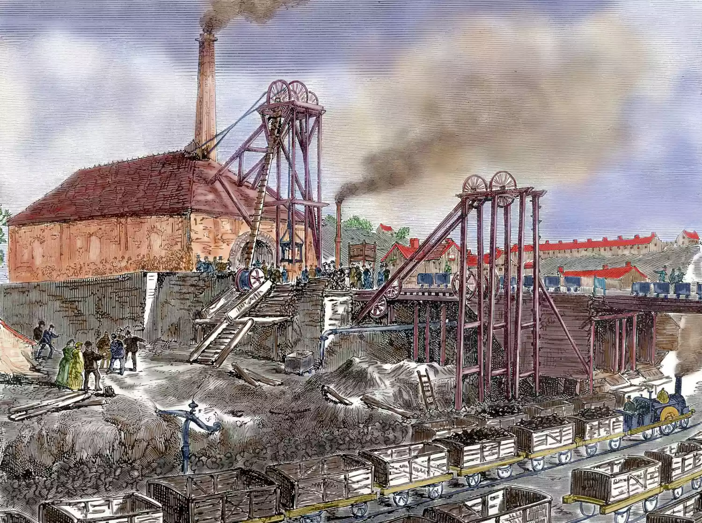

Industrialization was one of the driving forces behind rising temperatures
The Industrial Revolution, which began in the late 18th century in Britain before spreading to other parts of the world, led to a significant shift in global economic and social structures. This era was characterized by a shift from manual labor and agrarian societies to machine-based manufacturing and industry.

Danita Delimont / Getty Images
One of the most significant transformations during the Industrial Revolution was the increased use of fossil fuels. Prior to this period, most energy was sourced from wind, water, and wood. However, with the invention and adoption of steam engines, coal became a key energy source, with petroleum and natural gas following in later years.